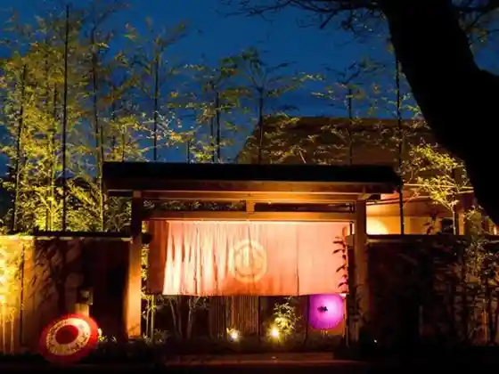
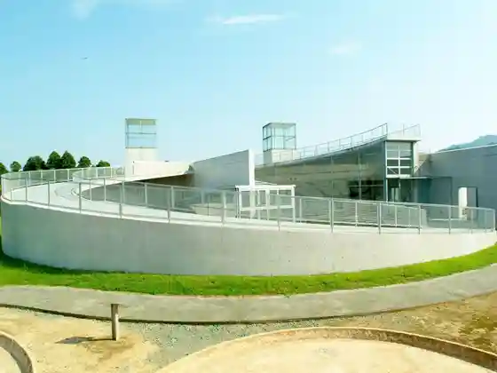
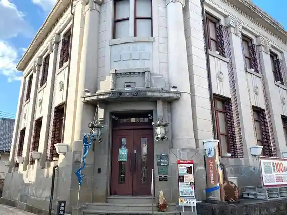
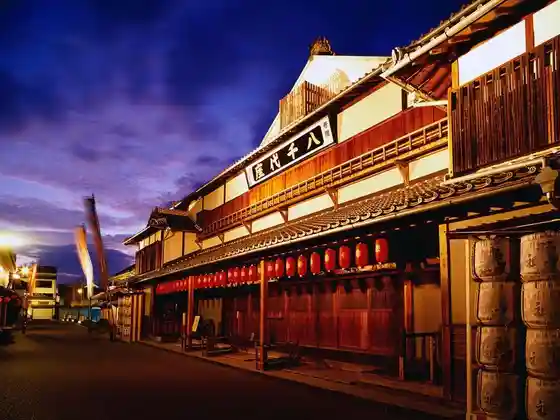

Satoyama no Kakure Yado Hana Tomi Tei
Yamaga, Kumamoto · 0968-48-3141 · Official / source link

Kumamoto Prefectural Soshoku Kofun Kan
Yamaga, Kumamoto · 0968-36-2151 · Official / source link

Yamaga Toro Mingei Kan
Yamaga, Kumamoto · 0968-43-1152 · Official / source link

Yachiyo Za Yume Sho Kura
Yamaga, Kumamoto · 0968-44-4004 · Official / source link

Hirayama Onsen
Yamaga, Kumamoto · 0968-44-0522 · Official / source link
Yamaga Onsen
Yamaga, Kumamoto · 0968-43-2952 · Official / source link
Yamaga Onsen Motoyu Sakura Yu
Yamaga, Kumamoto · 0968-43-3326 · Official / source link
Anzu no Oka
Yamaga, Kumamoto · 0968-48-3100 · Official / source link
Roadside Station Kahoku Oguri Sato
Yamaga, Kumamoto · 0968-32-4111 · Official / source link
Kumamoto Jun Sai no Yado Yutoriro Yamaga
Yamaga, Kumamoto · 0570-067-877 · Official / source link
Yamaga Onsen Hisashi San (Sumi)
Yamaga, Kumamoto · 0968-44-6121 · Official / source link
O Yado Yu no Kura
Yamaga, Kumamoto · 0968-43-4165 · Official / source link
Yamaga Onsen Seiryu So
Yamaga, Kumamoto · 0968-43-2101 · Official / source link
Sanparesu Matsusaka
Yamaga, Kumamoto · 0968-43-3083 · Official / source link
Yamaga no Okan no Yado Shin'aoyama So
Yamaga, Kumamoto · 0968-44-0076 · Official / source link
Yamaga Jinrikisha
Yamaga, Kumamoto · 0968-43-2952 · Official / source link
Yamaga Toro Odori Experience
Yamaga, Kumamoto · 0968-43-2952 · Official / source link
Yamaga Toro
Yamaga, Kumamoto · 0968-43-2952 · Official / source link
Chiyo no Sono Shuzo
Yamaga, Kumamoto · 0968-43-2161 · Official / source link
Roadside Station Suihen Plaza Kamoto
Yamaga, Kumamoto · 0968-46-1126 · Official / source link
Kikuchi Shiro Bussan Kan " Choja Kan "
Yamaga, Kumamoto · 0968-48-2200 · Official / source link
Kao Bussan Kan
Yamaga, Kumamoto · 0968-36-3838 · Official / source link
Oguri Sato Kantorii Park
Yamaga, Kumamoto · 0968-32-2150 · Official / source link
Gaku Kan Gorge
Yamaga, Kumamoto · 0968-32-3111 · Official / source link
Ya Tani Gorge
Yamaga, Kumamoto · 0968-48-9156 · Official / source link
Bansho no Tanada
Yamaga, Kumamoto · 0968-48-3111 · Official / source link
Fudo Iwa
Yamaga, Kumamoto · 0968-43-1579 · Official / source link
Nabeta Mizu Asobi Park
Yamaga, Kumamoto · 0968-43-1591 · Official / source link
Omiya Shrine Toro Dono
Yamaga, Kumamoto · 0968-44-1257 · Official / source link
Meiso no Mori Park
Yamaga, Kumamoto · 0968-32-3111 · Official / source link
Sagara Kannon (Sagara Tera)
Yamaga, Kumamoto · 0968-48-9144 · Official / source link
Kikuchi Shiro
Yamaga, Kumamoto · 0968-48-3178 · Official / source link
Ho Yasuda Higashihara Iseki (Katodahigashibaruiseki)
Yamaga, Kumamoto · 0968-43-1651 · Official / source link
Chibusan Burial Mound Benkeigaana Burial Mound
Yamaga, Kumamoto · 0968-43-1145 · Official / source link
Iwahara Futago Tsuka Burial Mound
Yamaga, Kumamoto · 0968-36-2151 · Official / source link
Kiyora Memorial Museum
Yamaga, Kumamoto · 0968-46-5127 · Official / source link
Yamaga Ritsu Museum
Yamaga, Kumamoto · 0968-43-1145 · Official / source link
Komekome Somon Tour
Yamaga, Kumamoto · 0968-43-2952 · Official / source link
Oku Ya Tani Keikoku Mazaneicha Kirari
Yamaga, Kumamoto · 0968-48-9595 · Official / source link
Nichirin Tera
Yamaga, Kumamoto · 0968-43-5802 · Official / source link
Ipponmatsu Park
Yamaga, Kumamoto · 0968-46-5841 · Official / source link
Airatobikazura
Yamaga, Kumamoto · 0968-48-3111 · Official / source link
Kodai Hasu Sono
Yamaga, Kumamoto · 0968-36-3838 · Official / source link
Kugi no Hana Falls (Kugi no Hana no Taki)
Yamaga, Kumamoto · 0968-43-1579 · Official / source link
Yamaga Onsen Nagameyama Niwa
Yamaga, Kumamoto · 0968-44-7712 · Official / source link
Hotaru no Nagaya
Yamaga, Kumamoto · 0968-48-1222 · Official / source link
Kazoku Onsen Yu no Kawa
Yamaga, Kumamoto · 0968-33-4229 · Official / source link
Kikuka Wainarii
Yamaga, Kumamoto · 0968-41-8585 · Official / source link
Uchiwa Ya Kurikawa Shoten
Yamaga, Kumamoto · 0968-46-2051 · Official / source link
Yama no Te
Yamaga, Kumamoto · 0968-31-0087 · Official / source link
Yamaga Joryu Tokoro
Yamaga, Kumamoto · 0968-36-3400 · Official / source link
Kuri to Sora
Yamaga, Kumamoto · 0968-48-2200 · Official / source link
Ume Ya
Yamaga, Kumamoto · 090-2390-6876 · Official / source link
Kazoku Yu Genji
Yamaga, Kumamoto · 0968-44-3654 · Official / source link
Roten Yu Kaba (Momiji)
Yamaga, Kumamoto · 0968-43-3026 · Official / source link
Kazoku Yu Yamabushi
Yamaga, Kumamoto · 0968-43-3340 · Official / source link
suyasuya (Suyasuya)
Yamaga, Kumamoto · Official / source link
GLAMPER'S (Guranpazu)
Yamaga, Kumamoto · 096-295-7289 · Official / source link
Iyashi Forest
Yamaga, Kumamoto · 096-42-5100 · Official / source link
Hirayama Onsen Yamafutokoro no Yado Hitotsugi Isso
Yamaga, Kumamoto · 0968-43-1013 · Official / source link
Hirayama Onsen Higaeri (Hana no Bandai)
Yamaga, Kumamoto · 0968-44-0887 · Official / source link